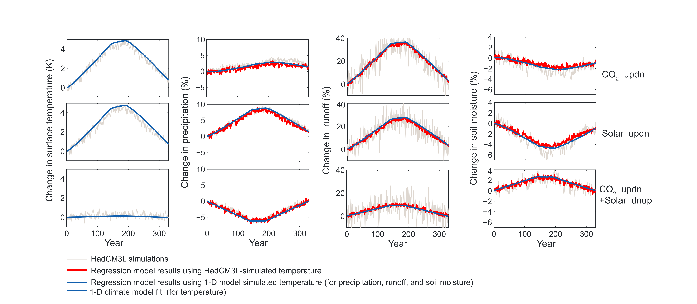

Fast and slow climate responses to CO2 and solar forcing — a linear multivariate regression model characterizing transient climate change
Key finding. A linear multivariate regression model representing each climate variable as a combination of its sensitivity to CO2 forcing, to solar forcing, and to global mean surface temperature change reproduces the temporal evolution and spatial distribution of HadCM3L-simulated transient change in surface temperature, precipitation, runoff, soil moisture, cloudiness, and radiative fluxes.

What question did this research address?
The climate's response to a change in forcing separates naturally into two parts. There is a fast response to the imposed forcing itself, and a slow feedback that follows from the resulting change in surface temperature. Earlier work characterized each part for different forcing agents.
This paper asked whether that decomposition is merely descriptive or actually predictive — whether fast responses and slow feedbacks derived from time-mean model results can be recombined to infer the full transient climate change.
What did we find?
The regression model's parameters were derived from time-mean results of a set of HadCM3L step-forcing simulations, then used to emulate the same model's transient response to changing CO2 and solar forcing.
The emulation succeeds across a wide range of variables, not just temperature. It reproduces precipitation, runoff, soil moisture, cloudiness, and radiative fluxes in both their evolution over time and their spatial pattern.
This implies that for the variables considered, the total change really is well represented as the sum of the fast response and the slow feedback — the decomposition captures the physics rather than merely labelling it.
Combining the regression model with a simple one-dimensional heat-diffusion climate model allows transient change to be reconstructed from step-forcing experiments alone.
Why does it matter?
Step-forcing experiments are cheap relative to full transient simulations. If their time-mean results are sufficient to reconstruct the transient response, a large amount of information can be obtained without running the expensive experiment.
The decomposition is also conceptually useful on its own terms. It separates what the forcing does directly from what the resulting warming does in turn, which is what makes it possible to compare forcing agents that act through different mechanisms.
Citation, data, and code
Long Cao, Govindasamy Bala, Meidi Zheng, and Ken Caldeira (2015). Fast and slow climate responses to CO2 and solar forcing — a linear multivariate regression model characterizing transient climate change. Journal of Geophysical Research: Atmospheres 120.